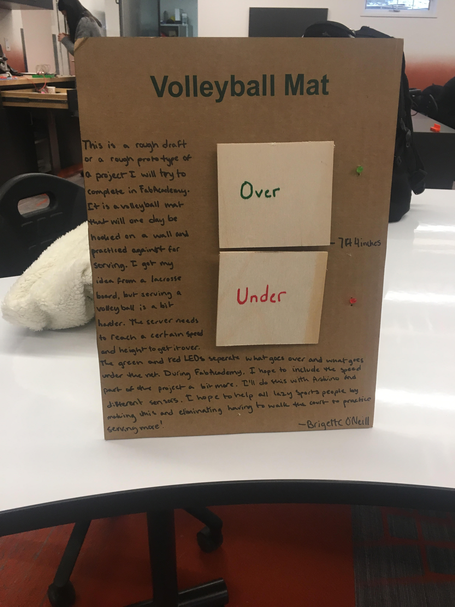
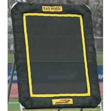

This week we made our final projects. This was the week I anticipated to be the hardest, especially since midterms were coming up and I was already stressed out because of the amount of work I had to spend on studying for those, but my final project was quiet simple. I used processes I was quite familiar with and made the whole thing low budget. I thought of my idea well before school started just to make sure I wouldn't waste any days thinking. I decided to make a prototype volleyball mat since I'm to lazy to walk across the court to pick up multiple balls. This project is a rough draft of a project I will try to complete during FabAcademy. My 'final' final project will most likely be hooked together and hooked onto a wall. I got this idea from a lacrosse backboard, but serving in volleyball is different that passing in lacrosse. The server needs to hit at a certain speed and height to make sure that the volleyball gets over the net. When I update this project, I hope to include a process where I can measure the total speed of the volleyball after it is hit. I'll measure the speed later with Arduino, a few different sensors, and a different design. I hope that this project will help all lazy sports people by making this and eliminating having to walk the court to practice serving more.
 The first step of my final project was making something to hold my idea up on. I used the laser cutter (1) and CorelDraw (2) as my processes to make it. I would later puncture holes in this for my electronics portion.
When I was first experimenting with what electronics (3) I would want. I made a series circuit so that the two lights would be independent with buttons, but dependent on the same battery. I first use a photoresistor to just work on my series circuit, but later edited it so that it would use buttons attached to long wires. I poked these through the cardboard in certain areas (particularly the green and red LEDs and the buttons.) I stook the battery and breadboard to the leg of the stand.
Next I soldered (4) some wires to my LEDS so that poking them through the cardboard stand wouldn't be difficult. Soldering was probably the easiest part since it barely took 15 minutes. First, I punctured a few holes in the cardboard for my LED's polarized pins. Then I slipped the LED through and soldered it.
All that was left to do with my project was cut the Over and Under panels in the wood shop (5), hot glue them to the buttons, and make a vinyl sticker (6). After I used the circular saw to cut the panels, I quickly hotglued the back to the buttons and tried to make sure that it wouldn't clog up the button. Next, I made a label for my project using the Roland Vinyl Cutter machine. All I did was type in 'Volleyball Mat,' put my material in, and let it cut out the letters. Then I transfered it using a sticky material and put it back onto the cardboard stand. That was the final process of my project!
Back to the Homepage.